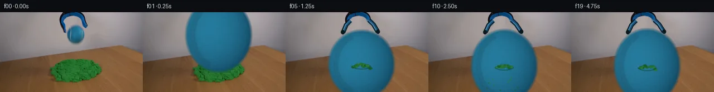

![首帧]()

Round 00
2026-11-04T20:01:04.345325+00:00像素候选变化代码 +296/−0inspection 更新
pixels a45db1a841d5cbcf · code fda48f3413da5f2a
查看本轮 generate.py 真实 diff
--- previous/generate.py
+++ current/generate.py
@@ -0,0 +1,296 @@
+#!/usr/bin/env python3
+"""Generate the 20-frame PixelWorld continuation from first_frame.png."""
+
+from pathlib import Path
+
+import cv2
+import numpy as np
+from PIL import Image, ImageDraw, ImageFilter, ImageFont
+
+import artifact_io
+
+
+ROOT = Path(__file__).resolve().parent
+W, H = 256, 144
+SS = 4
+RESAMPLE = Image.Resampling.LANCZOS
+RNG = np.random.default_rng(1601)
+
+
+def rgba_layer():
+ return Image.new("RGBA", (W * SS, H * SS), (0, 0, 0, 0))
+
+
+def composite_scaled(base, overlay):
+ """Downsample a 4x RGBA drawing and alpha-composite it."""
+ small = overlay.resize((W, H), RESAMPLE)
+ return Image.alpha_composite(base.convert("RGBA"), small)
+
+
+def clean_plate(source):
+ """Remove the held ball and the closed lower fingertips from the wall."""
+ arr = np.asarray(source.convert("RGB"))
+ mask = np.zeros((H, W), np.uint8)
+ cv2.ellipse(mask, (136, 41), (19, 21), 0, 0, 360, 255, -1)
+ cv2.fillPoly(
+ mask,
+ [
+ np.array([[110, 15], [120, 18], [124, 39], [116, 43], [108, 29]], np.int32),
+ np.array([[145, 13], [154, 16], [160, 34], [153, 41], [146, 29]], np.int32),
+ ],
+ 255,
+ )
+ mask = cv2.dilate(mask, np.ones((3, 3), np.uint8), iterations=1)
+ restored = cv2.inpaint(arr[:, :, ::-1], mask, 5, cv2.INPAINT_TELEA)[:, :, ::-1]
+ # Keep all pixels outside the surgical removal mask absolutely unchanged.
+ out = arr.copy()
+ out[mask > 0] = restored[mask > 0]
+ return Image.fromarray(out, "RGB")
+
+
+def draw_open_grabber(image, opening):
+ """Complete the retained upper tool with two fingers rotating outward."""
+ layer = rgba_layer()
+ d = ImageDraw.Draw(layer)
+ s = SS
+ o = float(opening)
+
+ left = [(116, 15), (111 - 0.25 * o, 23), (114 - o, 36)]
+ right = [(149, 14), (154 + 0.30 * o, 22), (154 + o, 35)]
+ left = [(round(x * s), round(y * s)) for x, y in left]
+ right = [(round(x * s), round(y * s)) for x, y in right]
+
+ # Nearly black rubber outline, blue metal core, and a narrow cool highlight.
+ for pts in (left, right):
+ d.line(pts, fill=(7, 22, 30, 255), width=8 * s, joint="curve")
+ d.line(pts, fill=(18, 73, 111, 255), width=5 * s, joint="curve")
+ hi = [(x - s, y) for x, y in pts]
+ d.line(hi, fill=(38, 117, 160, 190), width=2 * s, joint="curve")
+
+ # Dark rounded gripping pads point outward after release.
+ lx, ly = left[-1]
+ rx, ry = right[-1]
+ d.ellipse((lx - 4 * s, ly - 4 * s, lx + 3 * s, ly + 4 * s), fill=(7, 25, 31, 255))
+ d.ellipse((rx - 3 * s, ry - 4 * s, rx + 4 * s, ry + 4 * s), fill=(7, 25, 31, 255))
+ return composite_scaled(image, layer)
+
+
+def ball_sprite(rx=15.0, ry=17.0, squash=1.0):
+ """Render the blue tennis ball with a fuzzy antialiased edge and curved seam."""
+ ry *= squash
+ pad = 5
+ sw = int(np.ceil((rx + pad) * 2 * SS))
+ sh = int(np.ceil((ry + pad) * 2 * SS))
+ yy, xx = np.mgrid[0:sh, 0:sw]
+ cx, cy = (sw - 1) / 2, (sh - 1) / 2
+ nx = (xx - cx) / (rx * SS)
+ ny = (yy - cy) / (ry * SS)
… diff truncated; 209 more lines …